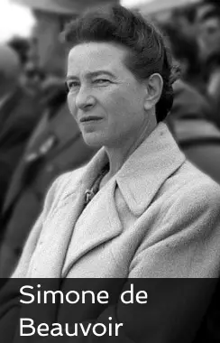
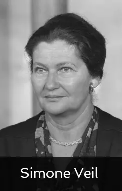
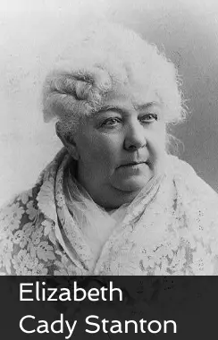
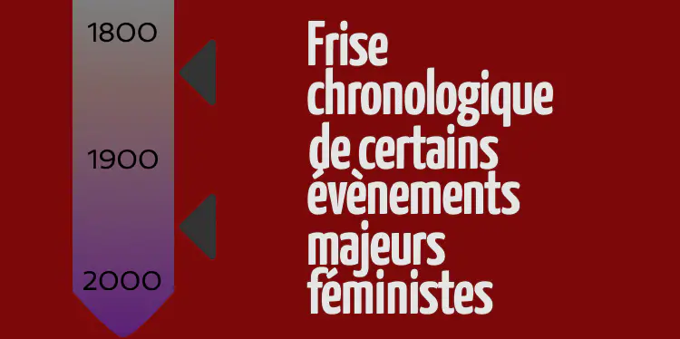

Galerie du féminisme


Emma Watson est une actrice britannique née le 15 avril 1990 et est devenue mondialement connue grâce au rôle de Hermione Granger dans la saga Harry Potter. L’actrice à également fait de nombreuses interventions féministe, participé à de nombreux évennement pour l’égalité homme-femme, etc…
Elle a également été nommée Ambassadrice de bonne volonté d’ONU Femmes et a participé aux campagnes CAMFED et HeForShe de l’ONU.

Rosa Parks est née le 4 février 1913 en Alabama et est décédée le 24 octobre 2005 à 92 ans, dans le Michigan. Elle est une militante des droits civiques et pour les droits de la personne humaine, elle a lutté pendant de nombreuses années contre la ségrégation raciale. En 1955 Rosa Parks a refusé de céder sa place à une

femme blanche dans un bus, cela lui a value une amende et c’est par la suite qu’elle a engagé sa lutte pour la défense des droits civiques.

Olympe de Gouges, de son vrai nom Marie Gouze, est née le 7 mai 1748 et exécutée le 3 novembre 1793 à 45 ans, en France est une écrivaine, philosophe, journaliste et femme politique. Mais elle est surtout l’une voire la plus grandes figures du féminisme en France, elle a rédigé de nombreux écrit en faveur des
droits de la femme dont la Déclaration des droits de la femme et de la citoyenne en 1791.

Simone de Beauvoir est née le 9 janvier 1908 et décédée le 14 avril 1986 à 78 ans, à Paris en France, elle est une philosophe, romancière et essayiste française. Elle a écrit plusieurs essais mais l’un des plus célèbre reste l’essai Le Deuxième Sexe en 1949. Elle a également participé à la fin des années
70 au Mouvement de libération des femmes.

Simone Veil est née 13 juillet 1927 et est décédée le 30 juin 2017 à 89 ans, en France, elle est une magistrate et une femme politique française. Elle a été ministre de la Santé, présidente du Parlement européen, député européenne, “ministre d'État, ministre des Affaires Sociales, de la Santé et de la Ville” et enfin membre
du Conseil constitutionnel français. Simone Veil est notamment connue pour son combat pour la dépénalisation de l’avortement de 1974 à 1975.
Elizabeth Cady Stanton est née le 12 novembre 1815 et décédée le 26 octobre 1902 à 86 ans, aux Etats-Unis, elle est une écrivaine, abolitionniste et suffragiste américaine. Elle est devenue un figures du féminisme au états-Unis grâce à son combat pour le droit de vote et le droit des femmes. Elle a
Elizabeth Cady Stanton est née le 12 novembre 1815 et décédée le 26 octobre 1902 à 86 ans, aux Etats-Unis, elle est une écrivaine, abolitionniste et suffragiste américaine. Elle est devenue un figures du féminisme au états-Unis grâce à son combat pour le droit de vote et le droit des femmes. Elle a
Glossaire
Suffragettes : militantes du mouvement pour le droit de vote des femmes au Royaume-Uni.
HeForShe : est une campagne lancée par l’ONU femmes en 2014 afin de lutter pour l’égalité des sexes et le droit des femmes, le tout à travers des actions menées par des hommes. De nombreuses célébrités y ont participé comme Emma Watson, Russell Crowe, le Prince Harry ou encore le couple Obama.
CAMFED : C’est une organisation créée en 1993 afin de venir en aide au pays pauvre d’Afrique en améliorant les condition scolaire des jeunes filles. Plusieurs personnalités y ont participé comme Emma Watson, Morgan Freeman, Bill Clinton et Rihanna.
Le Deuxième Sexe : C’est un essai féministe écrit par Simone de Beauvoir en 1949, son essai traite de nombreux point sur lesquels les femmes sont concidéré comme inférieurs aux hommes et pourquoi.
Mouvement de libération des femmes : C’est un mouvement féministe exclusivement composé de femmes lancé en 1970 prônant la liberté des femmes et de leur corps. De nombreuses écrivaines ont rejoint le mouvement comme Simone de Beauvoir, Annie Sugier et Anne Zelensky.
Ségrégation raciale : On parle de ségrégation raciale quand l’état autorise ou applique des actions discriminatoire à l’encontre d’une éthnie.

Voir plus ...